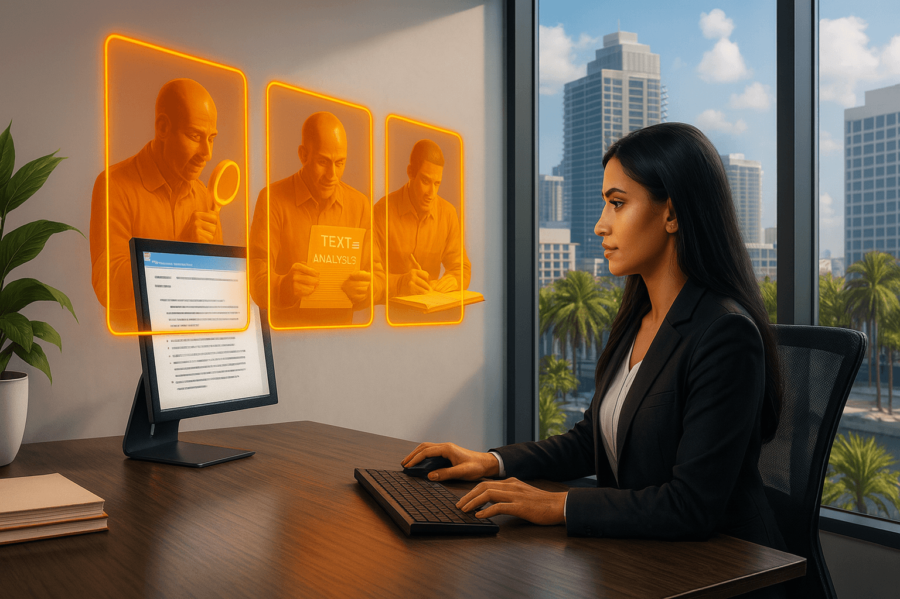

Sumarização de peças processuais
A solução identifica e realça automaticamente as alegações presentes nos documentos, facilitando a visualização dos principais pontos do processo.

CASE / AssertIA / TCU
Com o AssertIA, a inteligência artificial assume parte do trabalho, e o auditor ganha tempo para formar a sua convicção.
O AssertIA automatiza a rotina e oferece suporte à análise do auditor, contribuindo para decisões mais embasadas e eficientes.
A solução identifica e realça automaticamente as alegações presentes nos documentos, facilitando a visualização dos principais pontos do processo.
Integra mecanismos de busca em leis e jurisprudência para localizar, de forma ágil, os fundamentos jurídicos relacionados às alegações.
Gera sugestões de instruções baseadas nas evidências do processo, preservando a autonomia do auditor na formulação da decisão final.
Veja como o AssertIA automatiza a análise jurídica e apoia a redação de instruções.
 Assistir no YouTube ↗
Assistir no YouTube ↗
Desenvolvida pela NeuralMind em parceria com a Terranova e o Tribunal de Contas da União (TCU) por meio da Encomenda Tecnológica (ETEC). A solução atual é um piloto e continua em desenvolvimento.
A última versão da AssertIA, entregue em março deste ano, já está disponível aos servidores desde o final de março, impulsionando a modernização e a eficiência na fiscalização pública.
Sobre a ETEC ↗A NeuralMind é uma DeepTech fundada em 2017 dedicada a transformar a eficiência operacional das empresas através de Inteligência Artificial de ponta.
Desenvolvemos aplicações com informações confiáveis para que seu time e seus clientes possam usar sem medo.
Nosso time conta com diversos pesquisadores em IA, garantindo que nossos produtos adotem sempre o que há de mais novo na tecnologia.
Automatizamos tarefas repetitivas para que você e o seu time foquem em atividades mais estratégicas que realmente agregam valor ao negócio.
Nascida da pesquisa acadêmica com base tecnológica sólida. Carregamos no DNA a inovação e o rigor científico de uma das principais universidades da América Latina.